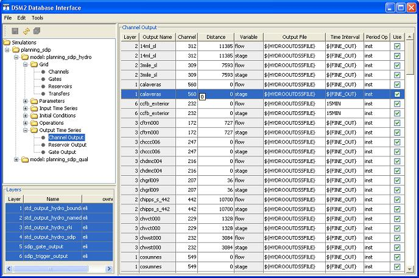

Overview:
There are several Output Views in the GUI. They assign
HEC-DSS or text output requests to model locations at channels,
reservoirs, gates and nodes. The output requests are equivalent to
those made in the OUTPUTPATHS section of the text input.
The database is the preferred place for logically coherent groups of
frequently-needed output -- for instance "sdip_output_qual" or
"std_hydro_rki" are layers that are available in the database. On the
other hand, quick diagnostic or run-specific output should be entered
in the text files, especially if adding such output would lead to a new
simulation in the database just for
non-archivable items such as output.
Tables:
Click on table name to go to the reference for that
table. Click on image to enlarge picture of GUI page and its tables.

Output Table
Each Output View has an Output Table. The table is a top-level
layered table. The table specifies the name for output request,
location, variable being output, time aggregation and destination file.
Field Descriptions
- Layer
- Layer number on which the entry is defined.
- Output Name
- Name of the parameter. This is the identifier of the
parameter.
- Identifiers
- Location to be output. Actual names of these columns vary from view to view and
depend on the model feature being output.
- Channel
- Channel
number and optional distance. Variables are stage, flow, velocity
and constituent names.
- Reservoir
- Reservoir name and (where applicable)
node number of connection. Variables are flow (connection must be supplied),
stage and flow-net.
- Gate
- Gate name and optional device name. Variables are install or flow (no device specified),
width, elev, height, op-to-node, op-from-node, position, device-flow (all of which require a device to be specified).
- Node
- Node Number. Node output is never recommended . There are no model variables that exist at nodes
-- see usage notes). If you do use output at nodes, note that the output will average across
incoming flows (this set may change over the tide cycle).
- Variable
- Model variable to be output.
- Time Interval
- Time Interval of the output. Can be any DSS-compliant
interval with a unit that is not calendar dependent (MIN, HOUR, DAY). This is a
departure from previous versions of DSM2, which offered monthly output.
- Period Op
- Period aggregation performed to convert the model time step
into the time interval of the output. May be INST or AVE, which produce instantaneous
- Use
- Check
box indicating item is in use. See Use Column.
- snapshots
or period averages
respectively.
Usage Notes:
- Finer output is preferred to daily. You can easily average to daily later outside the
model using a script or time series application.
Tidal data are very poorly represented by daily results, and numerous incorrect conclusions have arisen
from aliasing when this inherantly-24 hour operation is imposed on a 25-hour phenomenon.
Monthly output was disabled from DSM2 because it was not well trusted and hard to maintain as a black box within the model.
- Avoid output at nodes. This output is included for backward compatibility. There is no data at nodes
in the computational model and node-based output misrepresents this point.